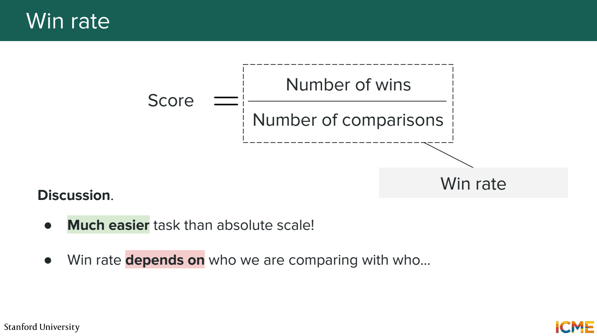
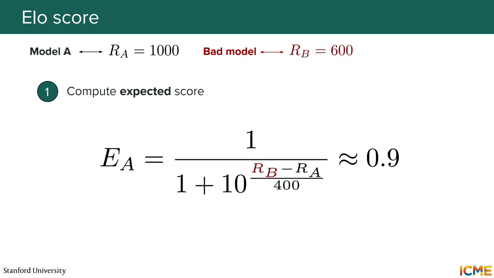
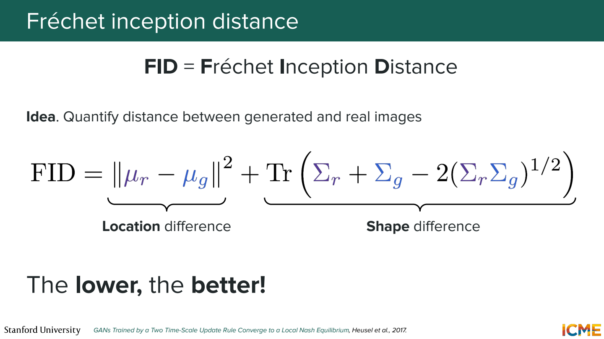
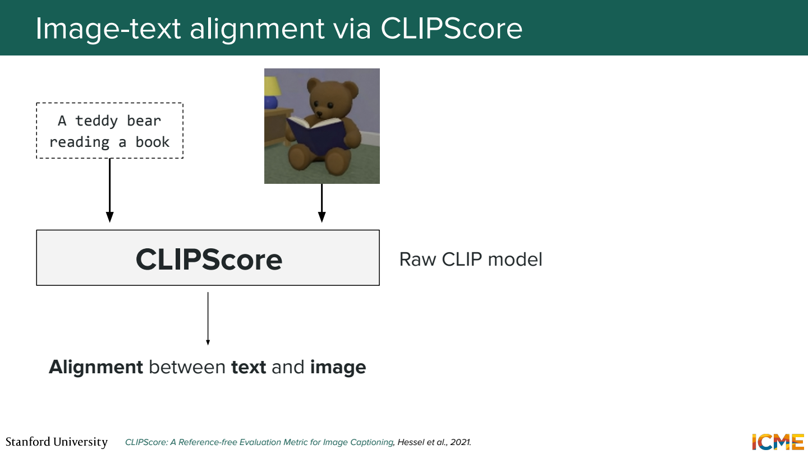
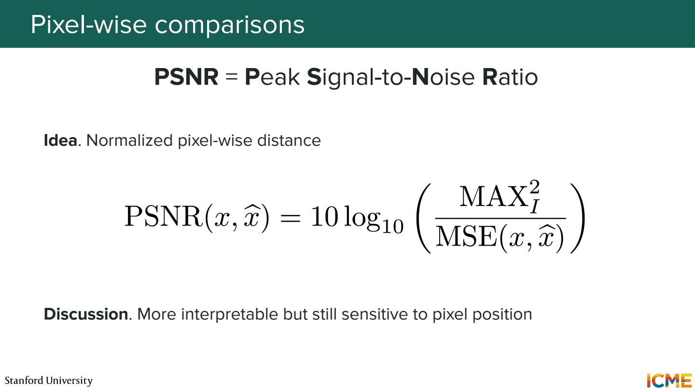
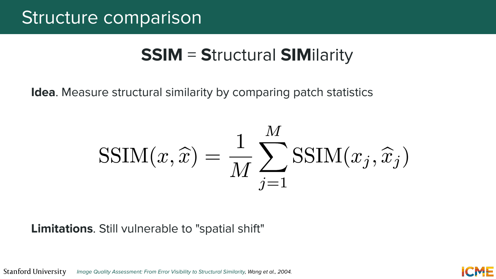
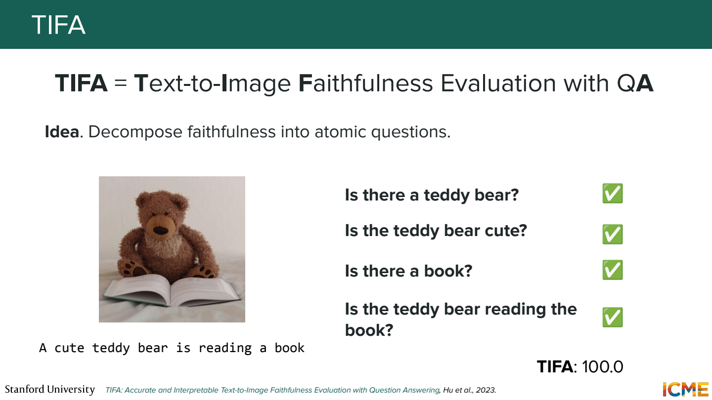
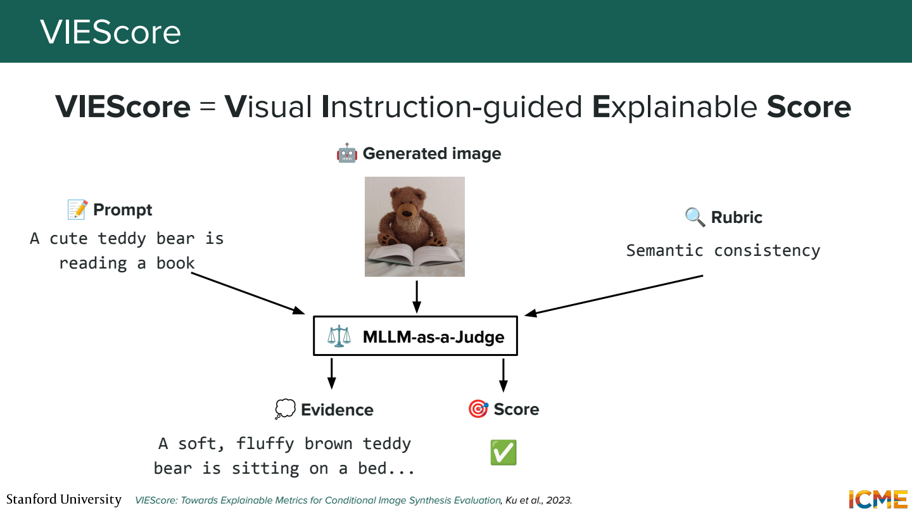
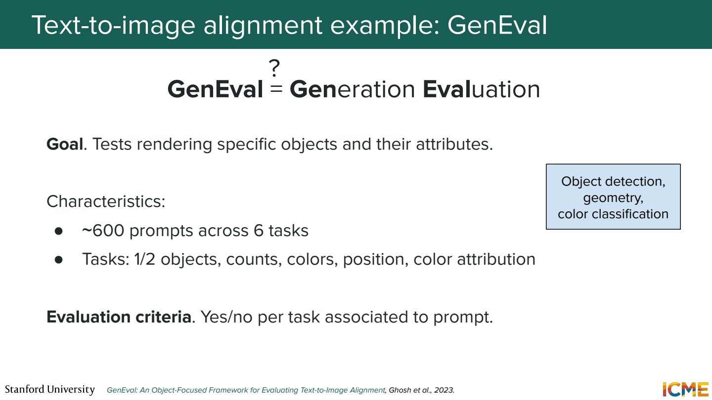

이 노트의 목차
7단원 잘 생성된 이미지인지 평가하기
‘보기 좋다’, ‘prompt를 잘 따른다’, ‘원본과 같다’는 서로 다른 기준. 한 지표로 세 가지를 모두 판단하기 어려움.
두 이미지 중 무엇을 고를까

같은 prompt로 만든 A와 B를 비교하면 절대 점수를 매기는 것보다 쉬울 수 있음. 동률이 없는 예제에서 100번 중 A가 60번 선택되면 win rate는 60%. 동률이 있다면 분모와 동률 처리 규칙을 함께 정해야 함.

Elo는 상대의 rating을 고려해서 비교 결과를 누적. 같은 10승이어도 강한 상대에게 이긴 것과 약한 상대에게 이긴 것을 다르게 반영.
새 rating = 기존 rating + K × (실제 점수 - 기대 점수)
실제 점수는 보통 승리 1, 무승부 0.5, 패배 0. 비교 상대와 prompt 구성에 영향을 받으므로 절대적인 이미지 품질 단위는 아님.
FID는 이미지 묶음의 분포를 비교

실제 이미지들과 생성 이미지들을 feature 공간으로 변환. 각 묶음의 평균과 공분산을 구해 두 Gaussian 근사 분포의 거리를 계산. 낮을수록 두 묶음이 그 feature 통계에서 비슷하다는 뜻.
직관을 위한 1차원 예제. 실제 feature 평균 0, 생성 feature 평균 2이고 분산이 둘 다 1이면,
평균 차이 항 = (0-2)² = 4
공분산 차이 항 = 0
FID = 4
실제 FID는 고차원 feature로 계산하므로 이 예제의 숫자를 실제 점수 수준과 비교하면 안 됨.
이미지 한 장의 FID가 좋다고 말할 수 있나?
FID는 이미지 묶음의 통계를 비교하는 지표. 개별 이미지의 prompt 준수 점수로 쓰는 것은 맞지 않음. 표본 수, 전처리, feature extractor 조건도 맞춰야 비교 가능.
CLIPScore는 이미지와 문장의 정렬

이미지 embedding과 텍스트 embedding의 유사도를 활용. 정답 이미지 없이도 prompt와 생성 이미지의 관련성을 평가할 수 있음.
빨간 컵 왼쪽에 파란 접시에서 두 물체와 색이 모두 보이면 높은 관련성이 나올 수 있음.
그렇다고 왼쪽·오른쪽 관계까지 정확하다는 보장은 없음.
텍스트 전체와 비슷한지와 세부 조건을 모두 만족하는지는 구분.
정답 이미지가 있으면 pixel 비교

복원·압축처럼 비교 대상 이미지가 정해진 작업에서는 MSE나 PSNR 사용.
PSNR = 10 log₁₀(MAX² / MSE)
Pixel 범위가 0~1이면 MAX=1.
MSE=0.01 → PSNR=20 dB
MSE=0.001 → PSNR=30 dB
MSE가 작을수록 PSNR은 높아짐. 이미지가 한 pixel 옆으로 밀리면 내용이 거의 같아도 오차가 커질 수 있음. 자유로운 이미지 생성에서 임의의 정답 사진 한 장과 PSNR을 비교하는 건 목적에 안 맞을 수 있음.
구조와 지각적 차이

SSIM은 작은 영역의 밝기·대비·구조 통계를 비교. LPIPS는 학습된 신경망의 feature 차이를 활용하는 지각적 거리. 둘 다 보통 비교할 reference 이미지가 필요.
Pixel 오차보다 사람이 느끼는 차이에 가까운 정보를 얻으려는 접근. 그래도 물체가 약간 이동하거나 작업의 평가 기준이 달라지면 해석에 주의가 필요.
Prompt를 작은 질문들로 쪼개기

예시 prompt: 빨간 모자를 쓴 곰 인형이 책을 읽고 있다.
곰 인형이 있나?
모자가 있나?
모자가 빨간색인가?
책을 읽고 있나?
TIFA는 이런 질문에 대한 시각적 답변을 이용해 조건 충족을 평가. 4개 중 3개가 맞았다는 가상의 결과라면, 어느 조건에서 실패했는지도 알 수 있음. 질문을 만드는 모델과 답하는 모델이 틀릴 가능성은 별도로 남음.

VIEScore처럼 multimodal 모델에 prompt·이미지·rubric을 전달하는 방식도 있음. 점수뿐 아니라 근거를 받을 수 있지만 그 근거가 실제 이미지와 맞는지 확인 필요. Judge의 취향이나 물체 인식 오류가 점수에 섞일 수 있음.
한 점수보다 조건별 실패 보기

GenEval은 물체의 존재, 개수, 색, 위치, 색의 귀속 등을 나눠 평가.
파란 컵 두 개와 빨간 접시 한 개에서는,
- 컵과 접시가 있는지
- 각각의 개수가 맞는지
- 파란색이 컵에, 빨간색이 접시에 붙었는지
다른 능력이 필요. 물체 하나는 잘 그리지만 관계에서 실패하는 모델을 평균 점수만으로는 놓칠 수 있음.